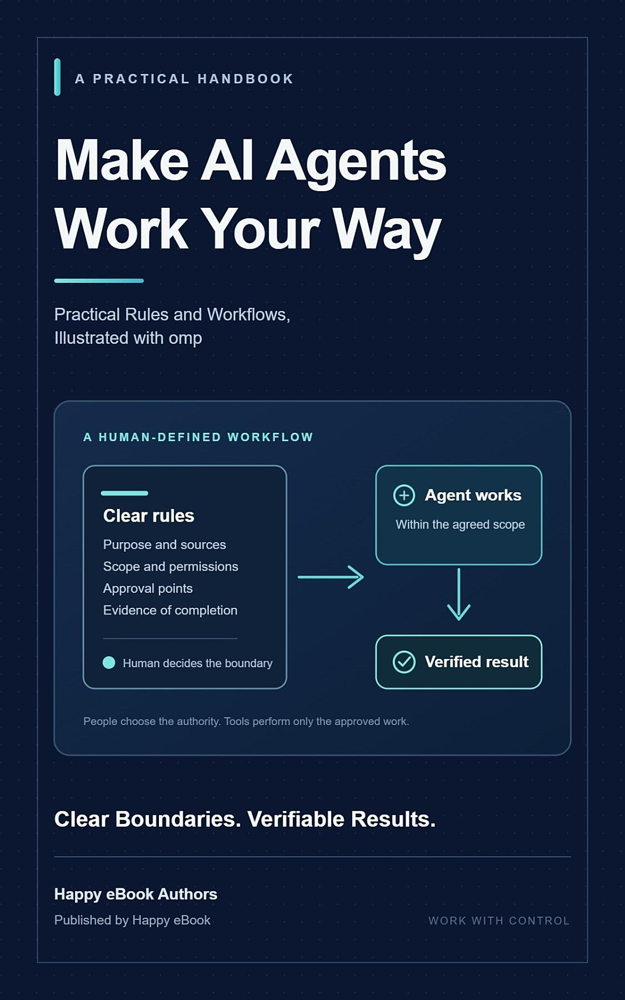

Make AI Agents Work Your Way
Practical Rules and Workflows, Illustrated with omp

Make AI Agents Work Your Way
Practical Rules and Workflows, Illustrated with omp
AI agents can read files, use tools, and make changes. Reliable work starts before the first action: define the goal, identify trusted sources, set the work area, decide which actions need your approval, and choose evidence that will show what actually happened. Make AI Agents Work Your Way is a practical handbook for people who want existing AI assistants to help with research, editing, file organization, and other multi-step work—without handing over every decision. It explains how to write useful work rules, organize a safer workspace, understand where settings come from, limit permissions and data flows, turn repeatable work into a skill, and check or recover a result. The book uses omp for concrete examples while separating general practices from tool-specific behavior and version differences. You do not need to be a programmer. Each example explains its purpose, boundaries, expected result, and checks. The exercises use fictional teaching files and do not require paid services, personal accounts, or changes to your real source files. The book includes fifteen chapters, four appendices, adaptable rule and workflow templates, and practical checklists. Its examples are starting points to review and adapt—not guarantees that an agent will always follow written instructions. Keep control of permissions, approvals, and consequential decisions. For authors, editors, researchers, individual workers, and technical users who need AI help with files or repeatable multi-step tasks. No programming background required. You will learn to: • Distinguish instructions from settings, and written rules from enforced permissions. • Set clear read/write boundaries and approval gates before using an agent. • Verify deliverables, retain useful evidence, and stop safely when sources or permissions are missing.